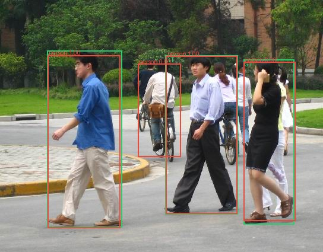
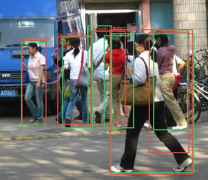
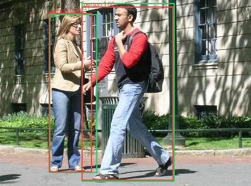
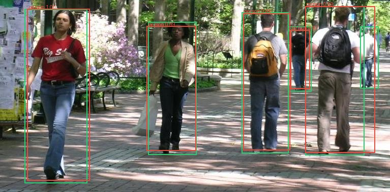
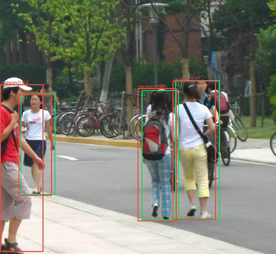
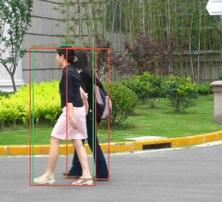

Validation failure gallery

FudanPed00016: localization_failure
FudanPed00025: false_negative, low_confidence_correct
PennPed00089: low_confidence_correct
PennPed00071: false_negative
FudanPed00041: localization_failure
FudanPed00002: localization_failure